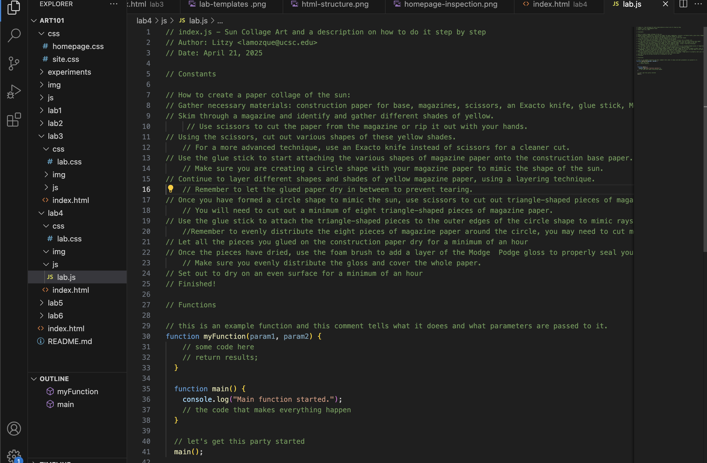

Lab 4 - Pseudocoding and Problem-Solving
Lab Description
For this lab we were practixing pseudocoding and being able to transfer that into JavaScript on our Lab4 file.
Challenge
One of the challenges I faced with this lab was attaching my javascript file onto my lab4 index.html file.
Problems
A problem that I faced was my linking my JavaScript file link and it not being read. With the help of my TA I was able to make changes to my file name so that it would be identified correctly.
Reflection
The process of Pseudocoding makes sense to me because it is similar to sketching out a drawing before commiting to painting it on a canvas.
Results
Below are my results of the JavaScript pseudocoding:
// How to create a paper collage of the sun:
// Gather necessary materials: construction paper for base, magazines, scissors, an Exacto knife, glue stick, Modge Podge gloss, and one foam brush.
// Skim through a magazine and identify and gather different shades of yellow.
// Use scissors to cut the paper from the magazine or rip it out with your hands.
// Using the scissors, cut out various shapes of these yellow shades.
// For a more advanced technique, use an Exacto knife instead of scissors for a cleaner cut.
// Use the glue stick to start attaching the various shapes of magazine paper onto the construction base paper.
// Make sure you are creating a circle shape with your magazine paper to mimic the shape of the sun.
// Continue to layer different shapes and shades of yellow magazine paper, using a layering technique.
// Remember to let the glued paper dry in between to prevent tearing.
// Once you have formed a circle shape to mimic the sun, use scissors to cut out triangle-shaped pieces of magazine paper.
// You will need to cut out a minimum of eight triangle-shaped pieces of magazine paper.
// Use the glue stick to attach the triangle-shaped pieces to the outer edges of the circle shape to mimic rays of the sun.
//Remember to evenly distribute the eight pieces of magazine paper around the circle, you may need to cut more.
// Let all the pieces you glued on the construction paper dry for a minimum of an hour
// Once the pieces have dried, use the foam brush to add a layer of the Modge Podge gloss to properly seal your collage
// Make sure you evenly distribute the gloss and cover the whole paper.
// Set out to dry on an even surface for a minimum of an hour
// Finished!
This image is showing what my pseudocode looks like in my javascript file
